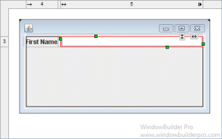
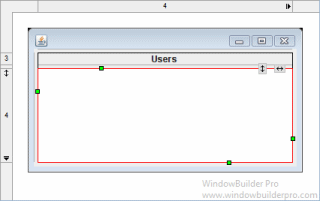
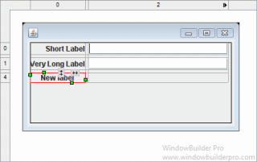

This page is used to control various Swing > Layouts > GridBagLayout options.
Use long constructor for GridBagConstraints
This preference determines whether Swing Designer generates empty GridBagLayout constructors or fully populated constructors. When empty constructors are used, individual GridBagConstraint values are set by accessing the appropriate fields. For example:
myButton = new JButton();JButton
GridBagConstraints gridBagConstraints = new GridBagConstraints();
gridBagConstraints.insets = new Insets(0, 0, 12, 23);
gridBagConstraints.ipady = 30;
gridBagConstraints.ipadx = 26;
gridBagConstraints.gridy = 1;
gridBagConstraints.gridx = 1;
getContentPane().add(myButton, gridBagConstraints);
myButton.setText("New JButton");
When fully populated constructors are used, all of the
GridBagConstraint values are set in the constructor. For example:
JButton myButton =
new
JButton();
getContentPane().add(myButton,
new
GridBagConstraints(1, 1, 1, 1, 0.0, 0.0,
GridBagConstraints.CENTER,
GridBagConstraints.NONE,
new
Insets(0, 0, 10, 24), 39, 33));
myButton.setText("New
JButton");
Use automatic horizontal/vertical grab
This preference controls whether new text-oriented widgets (JText, JComboBox, etc.) are set to grab horizontally when they are added to the window and whether new JTable and JTree widgets are set to grab horizontally and vertically when they are added to the window.
 
Automatically align right Label-like components before Text components
This preference controls whether JLabels should be right aligned when they are to the left of a JText or JComboBox widget.


Automatically change insets to generate column/row gaps
This preference controls whether the components insets are automatically managed to artificially create column/row gaps. Turn this preference off, if you wish to manually adjust the component insets.
Column gap
This preference determines the default column gap that is created by adjusting the component left and right insets.
Row gap
This preference determines the default row gap that is created by adjusting the component top and bottom insets.
Create variable for GridBagConstraints using pattern
This preference determines what pattern will be used to generate GridBagConstraints. The following styles are supported:
- ${constraintsAcronym}_${controlName} -- gbc_helloWorldButton
- ${constraintsAcronym}${controlName-cap} -- gbcHelloWorldButton
- ${controlName}${constraintsClassName} -- helloWorldGridBagConstraints
- ${dataDefaultName} -- gridBagConstraints_1